Spring 事务：回滚与传播行为
事务
问题分析
目前我们实现的新增员工功能中，操作了两次数据库，执行了两次 insert 操作。
- 第一次：保存员工的基本信息到
emp表中。 - 第二次：保存员工的工作经历信息到
emp_expr表中。
如果说，保存员工的基本信息成功了，而保存员工的工作经历信息出错了，会发生什么现象呢？那接下来，我们来做一个测试 。 我们可以在代码中，人为在保存员工的service层的save方法中，构造一个错误：
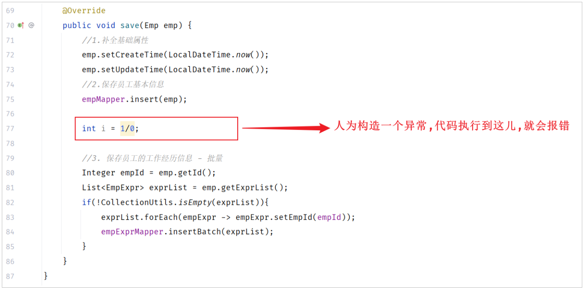
那接下来，我们就重启服务，打开浏览器，来做一个测试：
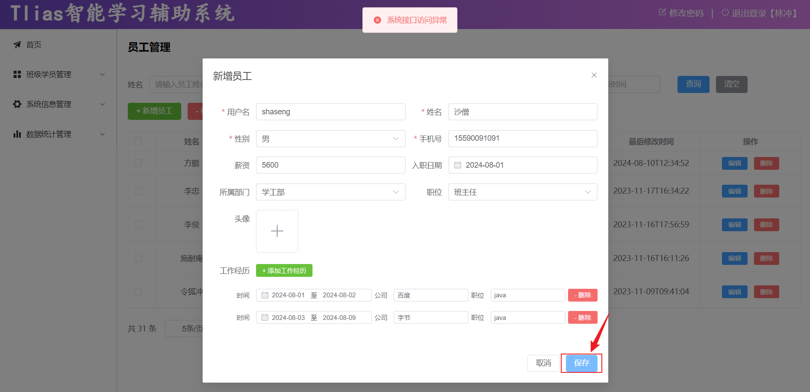
点击 “保存” 之后，提示 “系统接口异常”。我们可以打开IDEA控制台看一下，报出的错误信息。 我们看到，保存了员工的基本信息之后，系统出现了异常。
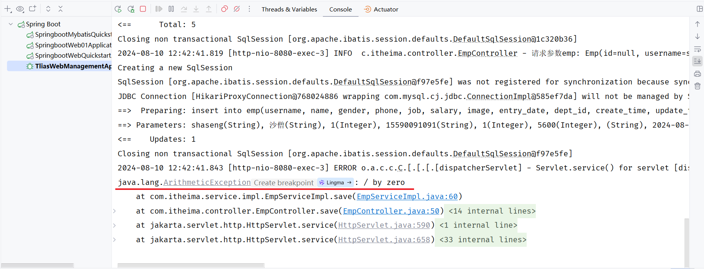
我们再打开数据库，看看表结构中的数据是否正常。
1). emp 员工表中是有 shaseng 这条数据的。
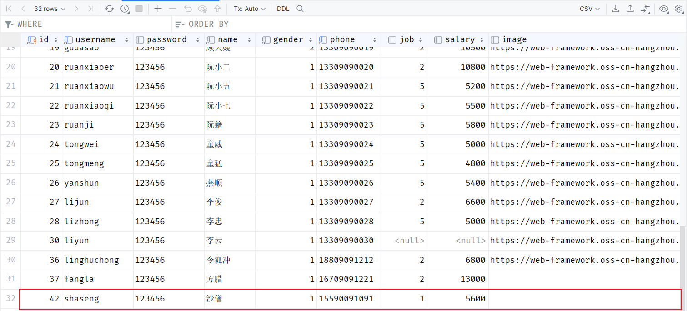
2). emp_expr 表中没有该员工的工作经历信息。
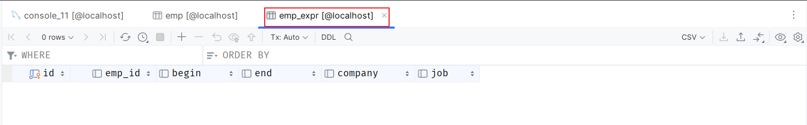
最终，我们看到，程序出现了异常 ，员工表 emp 数据保存成功了, 但是 emp_expr 员工工作经历信息表，数据保存失败了。 那是否允许这种情况发生呢？
- 不允许
- 因为这属于一个业务操作，如果保存员工信息成功了，保存工作经历信息失败了，就会造成数据库数据的不完整、不一致。
那如何解决这个问题呢？ 这需要通过数据库中的事务来解决这个问题。
介绍
概念： 事务是一组操作的集合，它是一个不可分割的工作单位。事务会把所有的操作作为一个整体一起向系统提交或撤销操作请求，即这些操作 要么同时成功，要么同时失败。
就拿添加员工的这个业务为例，在这个业务操作中，包含了两个操作，那这两个操作是一个不可分割的工作单位。
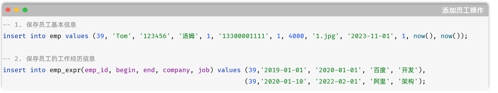
这两个操作，要么同时失败，要么同时成功。
默认MySQL的事务是自动提交的，也就是说，当执行一条DML语句，MySQL会立即隐式的提交事务。
操作
事务控制主要三步操作：开启事务、提交事务/回滚事务。
- 需要在这组操作执行之前，先开启事务 (
start transaction; / begin;)。 - 所有操作如果全部都执行成功，则提交事务 (
commit;)。 - 如果这组操作中，有任何一个操作执行失败，都应该回滚事务 (
rollback)。
那接下来，我们就可以将添加员工的业务操作，进行事务管理。 具体的SQL如下：
-- 开启事务
start transaction; / begin;
-- 1. 保存员工基本信息
insert into emp values (39, 'Tom', '123456', '汤姆', 1, '13300001111', 1, 4000, '1.jpg', '2023-11-01', 1, now(), now());
-- 2. 保存员工的工作经历信息
insert into emp_expr(emp_id, begin, end, company, job) values (39,'2019-01-01', '2020-01-01', '百度', '开发'), (39,'2020-01-10', '2022-02-01', '阿里', '架构');
-- 提交事务(全部成功)
commit;
-- 回滚事务(有一个失败)
rollback;
事务管理的场景，是非常多的，比如：需要在数据库中实现 CRUD
- 银行转账
- 下单扣减库存
Spring事务管理
可以将两种之前不同步的程序实现同步成功或者失败 ;
防止出现 数据库 和 程序处理不同步 ;
分析
在上述实现的新增员工的功能中，一旦在保存员工基本信息后出现异常。 我们就会发现，员工信息保存成功，但是工作经历信息保存失败，造成了数据的不完整不一致。
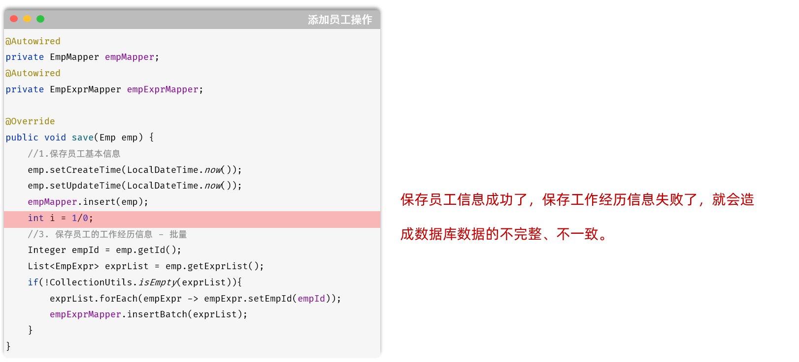
产生原因：
- 先执行新增员工的操作，这步执行完毕，就已经往员工表
emp插入了数据。 - 执行 1/0 操作，抛出异常
- 抛出异常之前，下面所有的代码都不会执行了，批量保存工作经历信息，这个操作也不会执行 。
此时就出现问题了，员工基本信息保存了，员工的工作经历信息未保存，业务操作前后数据不一致。
而要想保证操作前后，数据的一致性，就需要让新增员工中涉及到的两个业务操作，要么全部成功，要么全部失败 。 那我们如何，让这两个操作要么全部成功，要么全部失败呢 ？
那就可以通过事务来实现，因为一个事务中的多个业务操作，要么全部成功，要么全部失败。
此时，我们就需要在新增员工功能中添加事务。
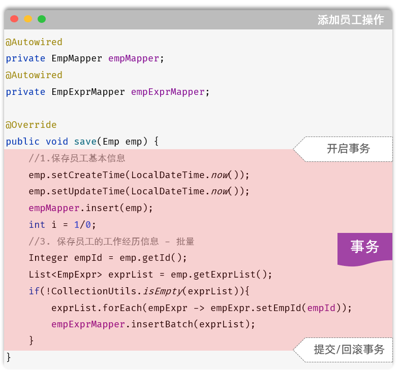
在方法运行之前，开启事务，如果方法成功执行，就提交事务，如果方法执行的过程当中出现异常了，就回滚事务。
**思考：**开发中所有的业务操作，一旦我们要进行控制事务，是不是都是这样的套路？
**答案：**是的。
所以在spring框架当中就已经把事务控制的代码都已经封装好了，并不需要我们手动实现。我们使用了spring框架，我们只需要通过一个简单的注解@Transactional就搞定了。
Transactional注解
注解：@Transactional
**作用：**就是在当前这个方法执行开始之前来开启事务，方法执行完毕之后提交事务。如果在这个方法执行的过程当中出现了异常，就会进行事务的回滚操作。
**位置：**业务层的方法上、类上、接口上
@Transactional
- 方法上：当前方法交给spring进行事务管理
- 类上：当前类中所有的方法都交由spring进行事务管理
- 接口上：接口下所有的实现类当中所有的方法都交给spring 进行事务管理
接下来，我们就可以在业务方法save上加上 @Transactional 来控制事务 。
@Transactional
@Override
public void save(Emp emp) {
//1.补全基础属性
emp.setCreateTime(LocalDateTime.now());
emp.setUpdateTime(LocalDateTime.now());
//2.保存员工基本信息
empMapper.insert(emp);
int i = 1/0;
//3. 保存员工的工作经历信息 - 批量
Integer empId = emp.getId();
List<EmpExpr> exprList = emp.getExprList();
if(!CollectionUtils.isEmpty(exprList)){
exprList.forEach(empExpr -> empExpr.setEmpId(empId));
empExprMapper.insertBatch(exprList);
}
}
建议 : 在方法上 添加 实现事务控制 ;
一般都实现在 多次控制数据库的输入输出的 Service 层 , 其他基础逻辑保证不要错 ;
@Transactional注解：我们一般会在业务层当中来控制事务，因为在业务层当中，一个业务功能可能会包含多个数据访问的操作。在业务层来控制事务，我们就可以将多个数据访问操作控制在一个事务范围内。
说明：可以在application.yml配置文件中开启事务管理日志，这样就可以在控制看到和事务相关的日志信息了
#spring事务管理日志
logging:
level:
org.springframework.jdbc.support.JdbcTransactionManager: debug
接下来，我们再次添加员工，看看控制台输出的日志信息。
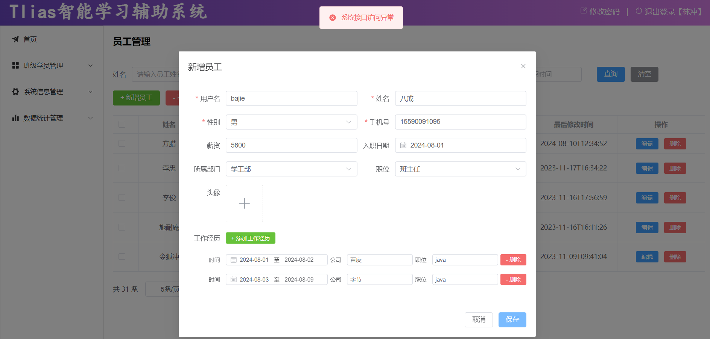
添加Spring事务管理后，由于服务端程序引发了异常，所以事务进行回滚。

打开数据库，我们会看到 emp 表 与 emp_expr 表中都没有对应的数据信息，保证了数据的一致性、完整性。
事务进阶
前面我们通过spring事务管理注解@Transactional已经控制了业务层方法的事务。接下来我们要来详细的介绍一下@Transactional事务管理注解的使用细节。我们这里主要介绍@Transactional注解当中的两个常见的属性：
- 异常回滚的属性：
rollbackFor - 事务传播行为：
propagation
我们先来学习下rollbackFor属性。
rollbackFor
@Transactional(rollbackFor = {Exception.class} )
我们在之前编写的业务方法上添加了@Transactional注解，来实现事务管理 : 默认的回滚逻辑 : 只有抛出运行时异常 ,才会实现回滚, 这里出现除 / 0也属于 是 运行时报错 ;
一个方法内部有异常，然后在方法名上实现抛出此异常，然后添加上注解 @Transactional(rollbackFor = Exception.class)，就可以实现遇到此异常就回滚。
三步走：
1. 方法内部可能抛出异常
2. 方法签名上 throws Exception
3. 类或方法上加 @Transactional(rollbackFor = Exception.class)
会实现全部的异常都实现回滚 , 也可以自己决定实现回滚时候使用的方法;
@Transactional
@Override
public void save(Emp emp) {
//1.补全基础属性
emp.setCreateTime(LocalDateTime.now());
emp.setUpdateTime(LocalDateTime.now());
//2.保存员工基本信息
empMapper.insert(emp);
int i = 1/0;
//3. 保存员工的工作经历信息 - 批量
Integer empId = emp.getId();
List<EmpExpr> exprList = emp.getExprList();
if(!CollectionUtils.isEmpty(exprList)){
exprList.forEach(empExpr -> empExpr.setEmpId(empId));
empExprMapper.insertBatch(exprList);
}
}
以上业务功能save方法在运行时，会引发除0的算术运算异常(运行时异常)，出现异常之后，由于我们在方法上加了@Transactional注解进行事务管理，所以发生异常会执行rollback回滚操作，从而保证事务操作前后数据是一致的。
下面我们在做一个测试，我们修改业务功能代码，在模拟异常的位置上直接抛出Exception异常（编译时异常）
@Transactional
@Override
public void save(Emp emp) {
//1.补全基础属性
emp.setCreateTime(LocalDateTime.now());
emp.setUpdateTime(LocalDateTime.now());
//2.保存员工基本信息
empMapper.insert(emp);
//模拟：异常发生
if(true){
throw new Exception("出现异常了~~~");
}
//3. 保存员工的工作经历信息 - 批量
Integer empId = emp.getId();
List<EmpExpr> exprList = emp.getExprList();
if(!CollectionUtils.isEmpty(exprList)){
exprList.forEach(empExpr -> empExpr.setEmpId(empId));
empExprMapper.insertBatch(exprList);
}
}
说明：在service中向上抛出一个Exception编译时异常之后，由于是controller调用service，所以在controller中要有异常处理代码，此时我们选择在controller中继续把异常向上抛。
重新启动服务后，打开Apifox进行测试，请求添加员工的接口：
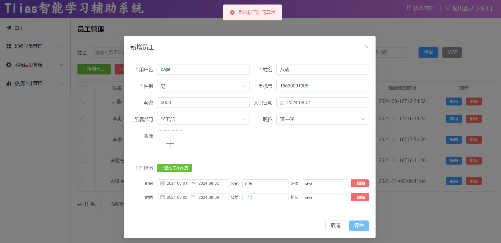
通过Apifox返回的结果，我们看到抛出异常了。然后我们在回到IDEA的控制台来看一下。
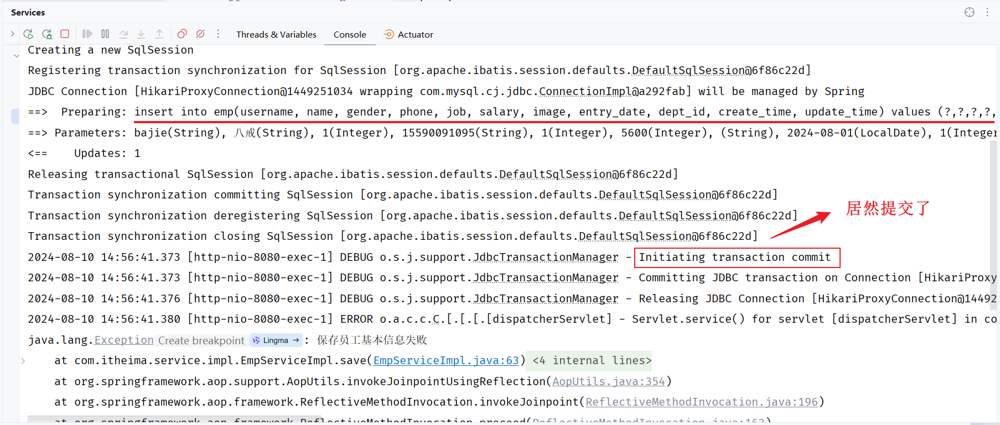
我们看到数据库的事务居然提交了，并没有进行回滚。
通过以上测试可以得出一个结论：默认情况下，只有出现RuntimeException(运行时异常)才会回滚事务。
假如我们想让所有的异常都回滚，需要来配置@Transactional注解当中的rollbackFor属性，通过rollbackFor这个属性可以指定出现何种异常类型回滚事务。
@Transactional(rollbackFor = Exception.class)
@Override
public void save(Emp emp) throws Exception {
//1.补全基础属性
emp.setCreateTime(LocalDateTime.now());
emp.setUpdateTime(LocalDateTime.now());
//2.保存员工基本信息
empMapper.insert(emp);
//int i = 1/0;
if(true){
throw new Exception("出异常啦....");
}
//3. 保存员工的工作经历信息 - 批量
Integer empId = emp.getId();
List<EmpExpr> exprList = emp.getExprList();
if(!CollectionUtils.isEmpty(exprList)){
exprList.forEach(empExpr -> empExpr.setEmpId(empId));
empExprMapper.insertBatch(exprList);
}
}
接下来我们重新启动服务，测试新增员工的操作：
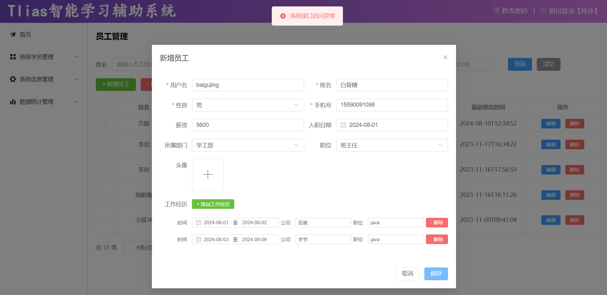
控制台日志，可以看到因为出现了异常又进行了事务回滚。
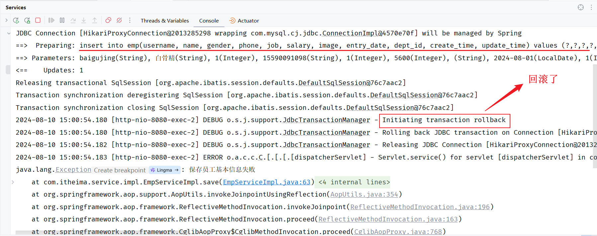
结论：
- 在Spring的事务管理中，默认只有运行时异常 RuntimeException才会回滚。
- 如果还需要回滚指定类型的异常，可以通过rollbackFor属性来指定。
propagation
介绍
我们接着继续学习@Transactional注解当中的第二个属性propagation，这个属性是用来配置事务的传播行为的。
什么是事务的传播行为呢？至少有两个
- 就是当一个事务方法被另一个事务方法调用时，这个事务方法应该如何进行事务控制。
例如：两个事务方法，一个A方法，一个B方法。在这两个方法上都添加了@Transactional注解，就代表这两个方法都具有事务，而在A方法当中又去调用了B方法。
@Transactional(rollbackFor = {Exception.class} , propagation= Propagation.REQUIRES_NEW) //事务管理 - 默认出现运行时异常RuntimeException才会回滚
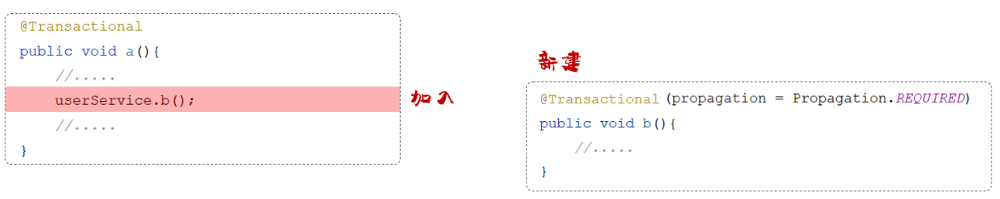
所谓事务的传播行为，指的就是在A方法运行的时候，首先会开启一个事务，在A方法当中又调用了B方法， B方法自身也具有事务，那么B方法在运行的时候，到底是加入到A方法的事务当中来，还是B方法在运行的时候新建一个事务？这个就涉及到了事务的传播行为。
我们要想控制事务的传播行为，在@Transactional注解的后面指定一个属性propagation，通过 propagation 属性来指定传播行为。接下来我们就来介绍一下常见的事务传播行为。
只需要实现前面的两个属性值就行;
属性值 | 含义 |
REQUIRED | 【默认值】需要事务，有则加入，无则创建新事务 |
REQUIRES_NEW | 需要新事务，无论有无，总是创建新事务 |
SUPPORTS | 支持事务，有则加入，无则在无事务状态中运行 |
NOT_SUPPORTED | 不支持事务，在无事务状态下运行,如果当前存在已有事务,则挂起当前事务 |
MANDATORY | 必须有事务，否则抛异常 |
NEVER | 必须没事务，否则抛异常 |
… |
对于这些事务传播行为，我们只需要关注以下两个就可以了：
- REQUIRED（默认值）
- REQUIRES_NEW
案例
接下来我们就通过一个案例来演示下事务传播行为propagation属性的使用。
**需求：**在新增员工信息时，无论是成功还是失败，都要记录操作日志。
步骤：
- 准备日志表 emp_log、实体类EmpLog、Mapper接口EmpLogMapper
- 在新增员工时记录日志
准备工作：
1). 创建数据库表 emp_log 日志表
-- 创建员工日志表
create table emp_log(
id int unsigned primary key auto_increment comment 'ID, 主键',
operate_time datetime comment '操作时间',
info varchar(2000) comment '日志信息'
) comment '员工日志表';
2). 引入资料中提供的实体类：EmpLog
@Data
@NoArgsConstructor
@AllArgsConstructor
public class EmpLog {
private Integer id; //ID
private LocalDateTime operateTime; //操作时间
private String info; //详细信息
}
3). 引入资料中提供的Mapper接口：EmpLogMapper
@Mapper
public interface EmpLogMapper {
//插入日志
@Insert("insert into emp_log (operate_time, info) values (#{operateTime}, #{info})")
public void insert(EmpLog empLog);
}
4). 引入资料中提供的业务接口：EmpLogService
public interface EmpLogService {
//记录新增员工日志
public void insertLog(EmpLog empLog);
}
5). 引入资料中提供的业务实现类：EmpLogServiceImpl
@Service
public class EmpLogServiceImpl implements EmpLogService {
@Autowired
private EmpLogMapper empLogMapper;
@Transactional
@Override
public void insertLog(EmpLog empLog) {
empLogMapper.insert(empLog);
}
}
代码实现:
业务实现类：EmpServiceImpl
技巧获取 : 可以直接使用 ctrl + alt + t 实现对选中的内容添加上 需要实现的框架 ;
@Autowired
private EmpMapper empMapper;
@Autowired
private EmpExprMapper empExprMapper;
@Autowired
private EmpLogService empLogService;
@Transactional(rollbackFor = {Exception.class})
@Override
public void save(Emp emp) {
try {
//1.补全基础属性
emp.setCreateTime(LocalDateTime.now());
emp.setUpdateTime(LocalDateTime.now());
//2.保存员工基本信息
empMapper.insert(emp);
int i = 1/0;
//3. 保存员工的工作经历信息 - 批量
Integer empId = emp.getId();
List<EmpExpr> exprList = emp.getExprList();
if(!CollectionUtils.isEmpty(exprList)){
exprList.forEach(empExpr -> empExpr.setEmpId(empId));
empExprMapper.insertBatch(exprList);
}
} finally {
//记录操作日志
EmpLog empLog = new EmpLog(null, LocalDateTime.now(), emp.toString());
empLogService.insertLog(empLog);
}
}
测试:
重新启动SpringBoot服务，测试新增员工操作 。我们可以看到控制台中输出的日志：
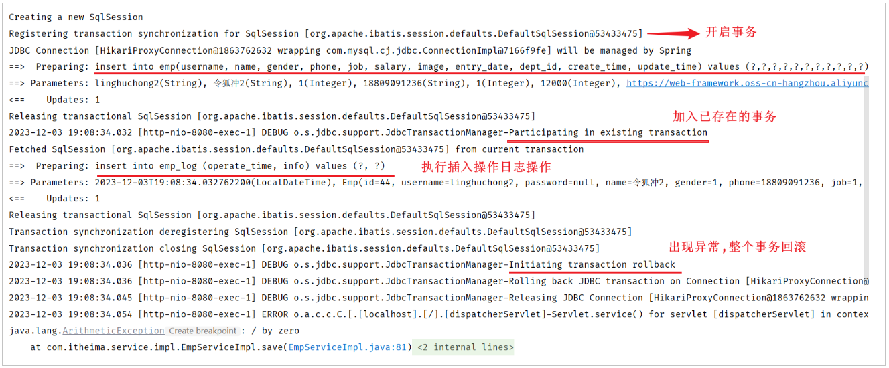
从日志中我们可以看到：
- 执行了插入员工数据的操作
- 执行了插入日志操作
- 程序发生Exception异常
- 执行事务回滚（保存员工数据、插入操作日志 因为在一个事务范围内，两个操作都会被回滚）
- 出现异常就会实现回滚 实现数据的一致 ;
注意这里使用的 insertLog 实现的方法内部没有设计使用 @Transactional () 内部实现 propagation = ropagation.REQUIRES_NEW .
所以内部默认实现的是 REQUIRED 加入上一层事务 , 同样实现了回滚的操作, 表中的日志数据会全部回滚 ;
REQUIRED | 【默认值】需要事务，有则加入，无则创建新事务 |
然后在 emp_log 表中没有记录日志数据 。
到此事务传播行为已演示完成，事务的传播行为我们只需要掌握两个：REQUIRED( 默认 ,自己不实现按照逻辑看的代码实现方式 )、REQUIRES_NEW。
- **REQUIRED：**大部分情况下都是用该传播行为即可。
- **REQUIRES_NEW：**当我们不希望事务之间相互影响时，可以使用该传播行为。比如：下订单前需要记录日志，不论订单保存成功与否，都需要保证日志记录能够记录成功。
- 这里实现 日志的保留 并不会影响数据库 的数据保持一致性, 合理设计事务, 实现监测的正确使用 ;
事务四大特性 ACID
面试题：事务有哪些特性？
- 原子性（Atomicity）：事务是不可分割的最小单元，要么全部成功，要么全部失败。
- 一致性（Consistency）：事务完成时，必须使所有的数据都保持一致状态。
- 隔离性（Isolation）：数据库系统提供的隔离机制，保证事务在不受外部并发操作影响的独立环境下运行。
- 持久性（Durability）：事务一旦提交或回滚，它对数据库中的数据的改变就是永久的。
事务的四大特性简称为：ACID
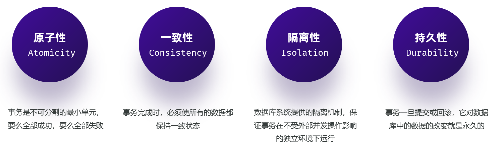
原子性（Atomicity） ：原子性是指事务包装的一组sql是一个不可分割的工作单元，事务中的操作要么全部成功，要么全部失败。
一致性（Consistency）：一个事务完成之后数据都必须处于一致性状态。
如果事务成功的完成，那么数据库的所有变化将生效。
如果事务执行出现错误，那么数据库的所有变化将会被回滚(撤销)，返回到原始状态。
隔离性（Isolation）：多个用户并发的访问数据库时，一个用户的事务不能被其他用户的事务干扰，多个并发的事务之间要相互隔离。
一个事务的成功或者失败对于其他的事务是没有影响。
持久性（Durability）：一个事务一旦被提交或回滚，它对数据库的改变将是永久性的，哪怕数据库发生异常，重启之后数据亦然存在。